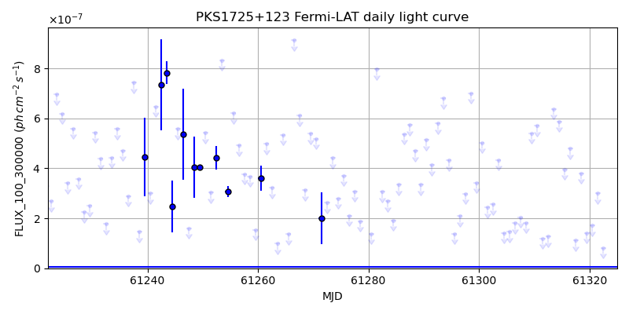
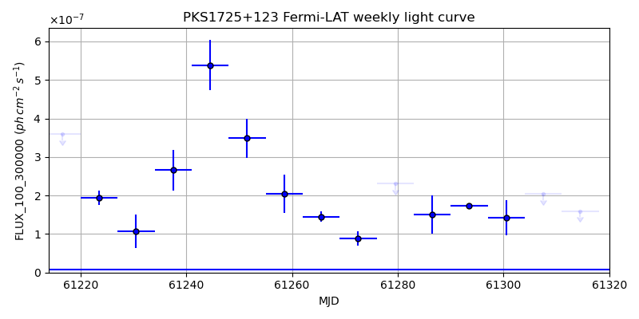
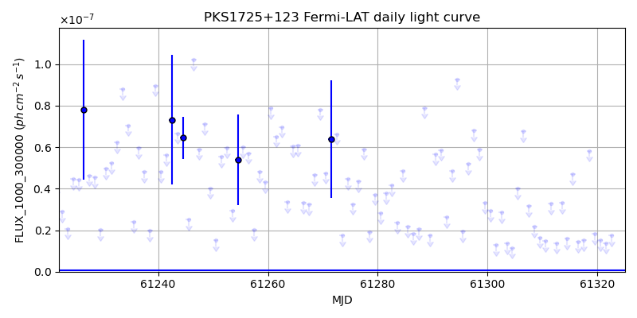
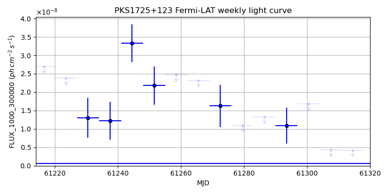

LAT Lightcurve site: https://fermi.gsfc.nasa.gov/ssc/data/access/lat/msl_lc/source/PKS_1725p123
NED: Query
Time of last update of this page: UT: 2026-10-10 15:24 (MJD: 61323.642)
| Property | Value |
|---|---|
| R.A. | 17:28:06.96 |
| Dec. | 12:15:39.6 |
| z | 0.568 |
| 3FGL SpectrumType | PowerLaw |
| 3FGL PL Index | 2.38 |
| 3FGL Flux_100_300000 | 1.63e-08 1 / (s cm2) |
| 3FGL Flux_1000_300000 | 6.79e-10 1 / (s cm2) |
| 3FGL Flux >200 GeV | 4.55e-13 1 / (s cm2) |
| 3FGL Extrap. Crab >200 GeV | 0.00 |
| 3FGL Flux After EBL Absorption >200GeV | 5.13e-14 1 / (s cm2) |
| 3FGL EBL Crab Fraction >200GeV | 0.00 |

| MJD | dMJD | Flux | dFlux | Frac3FGL | FracCrab>200GeV | EBLFracCrab>200GeV |
|---|---|---|---|---|---|---|
| 61318.50 | 0.50 | 3.81e-07 | 0.00e+00 | 0.00 | 0.00 | 0.00 |
| 61319.50 | 0.50 | 1.42e-07 | 0.00e+00 | 0.00 | 0.00 | 0.00 |
| 61320.50 | 0.50 | 1.71e-07 | 0.00e+00 | 0.00 | 0.00 | 0.00 |
| 61321.50 | 0.50 | 2.99e-07 | 0.00e+00 | 0.00 | 0.00 | 0.00 |
| 61322.50 | 0.50 | 8.23e-08 | 0.00e+00 | 0.00 | 0.00 | 0.00 |

| MJD | dMJD | Flux | dFlux | Frac3FGL | FracCrab>200GeV | EBLFracCrab>200GeV |
|---|---|---|---|---|---|---|
| 61286.50 | 3.50 | 1.51e-07 | 4.90e-08 | 22.19 | 0.04 | 0.00 |
| 61293.50 | 3.50 | 1.73e-07 | 5.53e-09 | 25.49 | 0.05 | 0.01 |
| 61300.50 | 3.50 | 1.42e-07 | 4.59e-08 | 20.92 | 0.04 | 0.00 |
| 61307.50 | 3.50 | 2.04e-07 | 0.00e+00 | 0.00 | 0.00 | 0.00 |
| 61314.50 | 3.50 | 1.59e-07 | 0.00e+00 | 0.00 | 0.00 | 0.00 |

| MJD | dMJD | Flux | dFlux | Frac3FGL | FracCrab>200GeV | EBLFracCrab>200GeV |
|---|---|---|---|---|---|---|
| 61318.50 | 0.50 | 5.82e-08 | 0.00e+00 | 0.00 | 0.00 | 0.00 |
| 61319.50 | 0.50 | 1.81e-08 | 0.00e+00 | 0.00 | 0.00 | 0.00 |
| 61320.50 | 0.50 | 1.51e-08 | 0.00e+00 | 0.00 | 0.00 | 0.00 |
| 61321.50 | 0.50 | 1.38e-08 | 0.00e+00 | 0.00 | 0.00 | 0.00 |
| 61322.50 | 0.50 | 1.75e-08 | 0.00e+00 | 0.00 | 0.00 | 0.00 |

| MJD | dMJD | Flux | dFlux | Frac3FGL | FracCrab>200GeV | EBLFracCrab>200GeV |
|---|---|---|---|---|---|---|
| 61286.50 | 3.50 | 1.32e-08 | 0.00e+00 | 0.00 | 0.00 | 0.00 |
| 61293.50 | 3.50 | 1.09e-08 | 4.83e-09 | 16.08 | 0.03 | 0.00 |
| 61300.50 | 3.50 | 1.68e-08 | 0.00e+00 | 0.00 | 0.00 | 0.00 |
| 61307.50 | 3.50 | 4.33e-09 | 0.00e+00 | 0.00 | 0.00 | 0.00 |
| 61314.50 | 3.50 | 4.23e-09 | 0.00e+00 | 0.00 | 0.00 | 0.00 |
--------------------------------------------------------- Using user-supplied coords: 17:28:06.96 12:15:39.6 2000 --------------------------------------------------------- FLWO UT night of: 2026-10-11 Local Sid. @ Midnight: 00:55 Sunset (-15.0) (local, UT): 19:04 02:04 Sunrise (-15.0) (local, UT): 05:18 12:18 Moonrise (local, UT): Moonset (local, UT): Moon phase: 0.01 --------------------------------------------------------- AzTime LSID UT Obj_el Obj_az Mn_el Mn_az Sep. --------------------------------------------------------- 19:04 19:58 02:04 50.5 249.1 -16.1 264.2 67.9 19:34 20:29 02:34 44.5 255.2 -22.3 267.8 67.7 20:04 20:59 03:04 38.2 260.3 -28.5 271.5 67.5 20:34 21:29 03:34 31.9 264.8 -34.7 275.4 67.2 21:04 21:59 04:04 25.5 269.0 -40.8 279.7 67.0 21:34 22:29 04:34 19.1 272.9 -46.8 284.6 66.7 22:04 22:59 05:04 12.7 276.7 -52.7 290.5 66.5 22:34 23:29 05:34 6.5 280.5 -58.4 297.7 66.2 23:04 23:59 06:04 0.6 284.4 -63.6 307.3 65.9 23:34 00:29 06:34 -5.9 288.4 -68.1 320.3 65.6 00:04 00:59 07:04 -12.0 292.7 -71.3 338.2 65.3 00:34 01:29 07:34 -17.8 297.4 -72.6 0.4 65.1 01:04 01:59 08:04 -23.4 302.6 -71.5 22.7 64.8 01:34 02:30 08:34 -28.6 308.3 -68.3 40.8 64.5 02:04 03:00 09:04 -33.4 314.8 -63.9 54.1 64.2 02:34 03:30 09:34 -37.6 322.2 -58.7 63.8 64.0 03:04 04:00 10:04 -41.2 330.5 -53.1 71.2 63.7 03:34 04:30 10:34 -43.9 339.8 -47.3 77.2 63.5 04:04 05:00 11:04 -45.5 349.9 -41.4 82.2 63.2 04:34 05:30 11:34 -46.1 0.4 -35.3 86.6 63.0 05:04 06:00 12:04 -45.4 10.9 -29.2 90.6 62.8 05:18 06:14 12:18 -44.8 15.5 -26.5 92.4 62.7 --------------------------------------------------------- Dark hours >55 deg.: 0.00